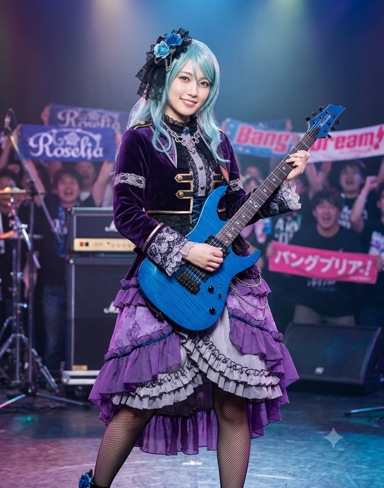

1. 개요
"연습은 실전처럼, 실전은 연습처럼(練習は本番のように、本番は練習のように). 선도위원을 맡고 있는 이상 풍기문란과 박자 이탈은 용서할 수 없습니다."
"...네? 왜 패스트푸드점에서 햄버거는 안 시키고 감자튀김(포테이토)만 라지(L) 사이즈로 세 개 시켰냐고요?! 크, 흠! 탄수화물과 나트륨의 보충 효율을 고려한 것뿐입니다! 결코 정크푸드를 좋아해서가 아니니까 그런 눈으로 보지 마세요, 아연(아코) 씨!!"
덕빈북도 낭원군 빙천면(氷川面)에서 태어나 유년기 천주시 인자면(현 인자읍)을 거쳐 효빈광역시 창전구에서 성장한 초엘리트 법학도이자, 프로 지향 심포닉 고딕 록 밴드 『로젤리아(Roselia 효빈)』의 리드 기타리스트. 동시에 효빈 도시철도 4호선 빙천(氷川)역의 명예 역장이자 박효빈 시장이 직접 임명한 '효빈광역시 명예 선도부장'이다.
출생지인 낭원군 빙천면(氷川面) 빙천리와 4호선 빙천역(氷川驛)의 한자 '빙천(氷川)'을 일본어로 읽으면 놀랍게도 《BanG Dream!》 Roselia의 기타리스트 히카와 사요(氷川 紗夜)의 성씨인 '히카와(氷川)'와 100% 일치한다! 이름인 사영(紗夜) 또한 사요(紗夜)의 한국식 한자 독음 그대로이며, 자신보다 정확히 5분 늦게 태어난 일란성 쌍둥이 여동생 허아영(히카와 히나 포지션)과 함께 낮과 밤의 길이가 같아지는 춘분(春分)인 2001년 3월 20일에 태어났다.
하늘빛이 감도는 청록색(민트색) 웨이브 장발에 깻잎머리, 살짝 처진 연두색 눈매의 성숙하고 청초한 미인상이다. 일본과 달리 한국 문화에서는 타인을 '성씨+씨(우 씨, 이 씨 등)'로만 부르면 자칫 싸가지 없거나 무례하게 들릴 수 있기 때문에, 예절과 규율을 목숨처럼 여기는 선도부장 허사영은 타인을 부를 때 반드시 '성+이름+씨(우희나 씨, 이리사 씨, 김인자 씨, 기유호 씨 등)'로 풀네임을 붙여 깍듯하게 존댓말을 구사하며, 정말 가까운 동료나 마음을 연 사람에게는 성씨를 떼고 이름(희나 씨·사영, 리사 씨, 인자 씨, 아연 씨 / 동생은 아영아)으로 부른다. 겉보기엔 차가운 정론을 날리는 엄근진 군기반장이지만, 그 이면에는 맥도날드 감자튀김 금단현상에 시달리고, 온라인 게임 NFO 레이드에 목숨을 걸며, 베이킹 반죽을 밀리미터(mm) 줄자로 재서 굽는 엄청난 갭 모에를 품고 있는 외강내유형 노력파 캐릭터다.
2. 생애 및 학창 시절 (빙천면의 봄비 속에서 피어난 노력의 선율)
2.1. 낭원군 빙천(氷川)면의 5분 먼저 태어난 쌍둥이 언니와 천주시 인자면 시절
2001년 3월 20일, 덕빈북도 낭원군 빙천면 빙천리(아버지 허빙천 변호사의 본향)에서 일란성 쌍둥이 자매 중 5분 먼저 태어난 언니로 세상에 나왔다. 어두운 밤의 비단을 뜻하는 언니 허사영(紗夜)과 밝은 태양의 나물을 뜻하는 5분 동생 허아영(日菜 / 히카와 히나 포지션)은 어린 시절까지만 해도 머리 스타일도 똑같이 하고 다니며 사영이가 동생을 "아영(히나) 쨩~"이라고 다정하게 부르는 사이좋은 쌍둥이였다(『프리즈마틱·듀오』 고증).
유년 시절 아버지가 천주시 법원 판사로 부임하면서 가족이 천주시 천성구 인자면(현 인자읍) 인자리에서 수년간 거주했는데, 이때 같은 동네의 유복한 피아노 신동 소녀였던 동갑내기 김인자(시로카네 린코 본체, 2001년생)를 처음 만나 인자초등학교 입학 초기까지 함께 다녔다.[5]이 유년기 인자면 인연 덕분에, 허사영은 나중에 창전구로 이사 간 뒤에도 김인자를 먼저 알고 지내다가 인자보다 늦게 동생 아영이를 소개해 주게 된다. 원작에서 린코가 언니 사요는 '히카와 씨', 동생 히나는 '히나 씨'로 구분해 부르는 것처럼, 한국 현실에서도 김인자가 처음엔 언니를 정중하게 '허사영 씨(친해진 후엔 사영 씨)'라고 풀네임 격식을 갖춰 부르다가, 나중에 소개받은 동생은 언니와 구분하기 위해 처음부터 친근하게 성을 빼고 '아영 씨(히나 씨)'라고 이름으로 부르게 된 유래가 바로 이 인자면 시절의 선후 관계 때문이다!
2.2. 창전구 이주와 천재 여동생 허아영(히나)을 향한 콤플렉스
초등학교 저학년 무렵, 아버지가 효빈광역시 창전구 팔조동 법조타운에 변호사 사무실을 개업하면서 사영이네 가족은 김인자네 가족과 비슷한 시기에 효빈시 창전구로 이사를 와 창전초등학교와 창전중학교를 다니게 되었다.
그러나 자라면서 사영의 마음속에는 거대한 어둠(열등감)이 싹트기 시작했다. 언니인 사영이는 무슨 일이든 피나는 노력과 예습·복습을 거듭해야만 성취할 수 있는 전형적인 '노력형 수재'였던 반면, 5분 늦게 태어난 쌍둥이 동생 허아영(히나)은 한 번 스쳐 본 것도 그 자리에서 천재적인 감각으로 마스터해 버리는 '규격 외의 천재'였기 때문이다! 사영이가 시작한 일마다 동생 아영이가 "언니 뭐 해? 나도 같이 할래~ 룽♪"이라며 따라 해놓고는 순식간에 언니의 실력을 추월해 버리자, 사영이는 동생과의 비교 속에서 극심한 자격지심과 트라우마에 시달리게 되었다.[6]어릴 적 무난하게 잘 먹던 '당근'을 극도로 혐오하게 된 이유 역시, 어린 시절 자신이 남긴 당근을 동생 아영이가 대신 먹어치우고 부모님께 칭찬받았던 기억과 맞물려 "당근을 먹는 것 자체를 이해할 수 없다"며 정색하게 된 아픈 비화(3성 『빗소리와 눈물』 고증)가 숨어 있다.
결국 중학교 시절 사영이가 일렉트릭 기타를 처음 잡은 이유도 "아영이가 하지 않는 나만의 영역을 갖기 위해서"였다. 그러나 사영이가 기타를 치는 모습을 본 언니 바라기 아영이가 "와아~ 언니 기타 소리 완전 룽♪ 하네! 나도 기타 칠래!"라며 기타를 산 지 며칠 만에 천재적인 연주를 선보이고 아이돌 밴드(파스파레 포지션)로 데뷔해 버리자, 사영의 내면은 얼음장처럼 차갑고 신경질적으로 굳어버렸다.
2.3. 월삼여고 선도부장 겸 궁도부 에이스와 『로젤리아』 합류
동생 허아영과 일부러 다른 고등학교를 지망해 창전구 명문 월삼여자고등학교에 진학한 사영은, 학생회 선도부장(풍기위원장)과 궁도부(활쏘기)를 겸임하며 자신에게도 타인에게도 한 치의 흐트러짐을 용납하지 않는 '얼음의 선도부장'으로 군림했다. (후배인 포피파·모니카 멤버들이 복도에서 사영과 마주치면 바짝 얼어붙어 90도로 인사했을 정도다.)
고교 시절 거쳐 간 일반 스쿨 밴드들이 자신의 스토익한 연습량을 따라오지 못하자 "연습을 놀이로 생각하는 분들과는 함께할 수 없습니다"라며 자진 탈퇴하던 중, 자신과 똑같이 음악에 모든 것을 거는 보컬 우희나(미나토 유키나 포지션)의 스카우트 제의를 받고 59만 8천 엔짜리 명기 ESP M-II Roselia Sayo를 들고 『로젤리아』의 두 번째 창립 멤버로 합류했다.
2.4. 『별에게 비는 소원』과 『가을비에 우산을』: 동생 허아영과의 눈물의 화해
로젤리아 초기만 해도 사영은 동생 허아영이 자기 방에 노크 없이 들어오면 화를 내고, 태아연(아코)이 친언니 태미연(토모에) 자랑을 늘어놓자 아영이가 연상되어 "언니라는 존재가 얼마나 부담스러운지도 모르고 멋대로 말하지 마세요!"라며 버럭 소리를 지를 만큼 내적 갈등이 심각했다.
그런 사영을 변화시킨 것은 동료들과의 시간, 그리고 두 번의 비 내리는 날이었다. 칠석 축제 날 소원 쪽지를 물고 간 까치를 쫓아 어린 시절 놀이터에서 아영이와 진솔한 대화를 나눈 뒤(『별에게 비는 소원』), 아영이의 매력적인 기타 소리와 자신의 '정확하기만 한 소리'를 비교하며 슬럼프에 빠졌던 가을날(『가을비에 우산을』), 사영은 아침 일찍 만난 태미연(토모에)으로부터 "아연이가 저를 따르는 건 순수하게 기뻐요. 아연이는 제 단 하나뿐인 동생이니까요"라는 어른스러운 조언을 듣고, 이어 우희나로부터 "그 아픔에서 도망치지 않고 마주하는 것이 가장 귀중한 일이야"라는 격려를 받았다.
그날 저녁 쏟아지는 가을비 속에서 우산을 들고 스튜디오 앞까지 자신을 마중 나온 동생 허아영을 본 사영은 마침내 참았던 눈물을 터뜨렸고, 집에 돌아와 자신의 열등감과 미안함을 전부 고백했다. 이에 평생 화를 낸 적 없던 아영이가 처음으로 얼굴을 일그러뜨리며 "언니는 거짓말쟁이야!! 난 언니의 기타 소리를 듣고 기타를 시작했단 말이야!! 언니가 괴롭다면 날 미워해도 좋으니까, 약속을 깨고 기타를 그만두려는 언니 같은 건 나야말로 엄청 싫다고!!"라고 외치자, 동생의 깊은 사랑을 깨달은 사영은 "언젠가 너와 나란히 서서 걸을 수 있도록 나만의 소리로 계속 기타를 치겠다"고 눈물로 약속하며 오랜 콤플렉스를 완전히 극복해 냈다(불후의 명곡 『Determination Symphony』 탄생 비화).
2.5. 로젤리아 중 나 홀로 『효빈대학교(게이호 대응) 공공학과(법학과 후신)』 진학! (feat. 동생 아영과의 캠퍼스 동행)
고등학교 3학년 대입 시즌, 원작 시즌 3의 대학 진학 구도가 현실의 효빈시에서도 소름 돋게 재현되었다! 원작에서 히카와 사요는 초일류 명문인 '게이호 여대 공공학과(법학과 후신)'에 진학하고, 나머지 로젤리아 성인 멤버 3명(유키나, 리사, 그리고 게이호에 붙고도 피아노 은사님을 따라간 린코)은 모두 '요츠바 여대'로 진학해 사요 혼자만 다른 대학에 남게 된다.
현실에서도 전교 최상위권 우등생이던 허사영은 자신의 철저한 원칙주의와 논리력을 살려 지역 최고 국립 명문대인 효빈대학교(게이호 대응) 사회과학대학 공공학과(현 로스쿨 과정 연계)에 전체 수석으로 입학했다! 원래 같이 효빈대에 합격했던 단짝 김인자(린코)가 존경하는 피아니스트 교수님을 따라 우희나·이리사가 간 엽월대학교(요츠바 대응)로 재수험을 쳐서 가버리는 바람에 로젤리아 중 사영이 혼자만 효빈대생이 되었으나, 대신 쌍둥이 여동생 허아영(히나, 효빈대 인류학·천문학 전공)과 같은 효빈대학교 캠퍼스에 나란히 입학하게 되었다! 과거의 사영이었다면 동생과 같은 대학에 가는 것을 피했겠지만, 이제는 졸업 이벤트에서 이리사에게 "아영이와 같은 대학에 다니게 되어 기대된다"고 말할 정도로 자매 관계가 완벽하게 회복되었음을 증명한 훈훈한 결말이다.
3. 비주얼 및 캐릭터성 (민트빛 선도부장 미녀의 치명적 감자튀김 갭 모에)
3.1. 161cm 로젤리아 최장신과 성숙하고 청초한 미인상
쌍둥이 동생 허아영과 같은 하늘빛이 도는 청록색(아쿠아 민트) 웨이브 머리카락과 연두색 눈동자를 지녔으나, 허쉬컷 단발에 벼머리를 하고 눈이 치켜올라간 귀여운 인상의 동생 아영이와 달리, 언니 허사영은 등까지 내려오는 긴 장발에 깻잎머리, 살짝 아래로 처진 차분한 눈매를 지녀 누가 봐도 2~3살은 더 성숙해 보이는 조신하고 청초한 공식 미녀다. 신장은 161cm(B82-W56-H84)로 로젤리아 다섯 멤버 중 최장신이며, 사복은 화려한 이리사(갸루)나 김인자(고스로리), 태아연(중2병 펑크)과 달리 단정하고 깔끔한 모범생·법학도 오피스 캐주얼을 선호한다. (사인 또한 꾸밈없이 세로로 '氷川紗夜 / 許紗夜' 한자만 정자체로 적는다.)
3.2. 4호선 빙천역~사야역 '감자튀김 라지(L) 밀수 루트'와 당근 극혐
금욕적이고 스토익한 허사영의 이미지를 한 방에 무너뜨리는 우주 최강의 갭 모에가 바로 '정크푸드, 특히 패스트푸드점 감자튀김(프렌치프라이)에 대한 광기 어린 집착'이다! 평소 건강과 규율을 중시하는 선도부장 체면 때문에 남들 앞에서는 안 먹는 척하지만, 실제로는 스트레스를 받거나 고민이 생길 때마다 머릿속에 온통 갓 튀긴 노란 감자튀김이 둥둥 떠다니는 중증 감튀 중독자(걸파☆피코 24화 '감자튀김 금단현상' 고증)다.
하필 그녀의 성씨 한자와 똑같은 효빈 도시철도 4호선 빙천(氷川)역(404번) 주변은 사영이의 차갑고 정밀한 성격을 빼닮은 공구상가 금속 인테리어로 꾸며져 있는데, 역 출구마다 맥도날드·버거킹·맘스터치 등 패스트푸드점이 줄지어 있는 일명 '빙천 감자튀김 로드'가 형성되어 있다! 게다가 빙천역에서 4호선을 타고 딱 두 정거장만 가면 이름이 '사요(Sayo)'와 비슷한 사야(四野)역(406번, 양사야 성지)이 나온다.
효빈시 팬들 사이에서는 "허사영이 우희나와 이리사의 눈을 피해 4호선 빙천역 패스트푸드점에서 감자튀김 라지(L) 사이즈 3개를 산 뒤, 열차를 타고 사야역으로 넘어가 빵과 함께 폭풍 흡입한다"는 『4호선 정크푸드 밀수 루트』가 학계의 정설로 통한다. 한 번은 패스트푸드점에서 태아연에게 현장을 딱 걸려 "사영 언니! 왜 햄버거는 안 시키고 포테이토만 라지로 시켜요?!"라는 정곡 폭격을 맞고 얼굴이 시뻘게진 적이 있으며, 2024년 만우절에는 "지금 가지고 있는 기타 기술을 전부 써서 『감자의 노래』를 작곡했습니다... 거짓말이에요"라는 대사를 남겨 팬들을 뒤집어놓았다.
3.3. NFO 일일 퀘스트 30분 컷 '로얄 나이트'와 줄자 베이킹
음악 외의 놀이에도 일절 대충 하는 법이 없는 스토익한 성격 때문에, 김인자와 태아연이 영업한 온라인 게임 『NFO(네오 판타지 온라인)』에 입문한 뒤로는 "연습 쉬는 시간 30분이면 일일 퀘스트를 전부 도는 데 충분합니다"라며 엑셀 시간표까지 짜서 플레이하는 헤비 유저가 되었다! 처음엔 오프라인 이벤트 보상 템에 관심 없는 척하다가 이리사가 "어라? 이 기사용 한정 방패 스탯이 엄청난데?"라고 말하자마자 눈빛이 돌변해 레이드 보스 백경을 아연이보다 2배 빠르게 도륙하고 상급 직업 『로얄 나이트』로 전직한 전설의 성기사다.
또한 이리사가 지각했던 날의 교훈으로 청엽구 우택동 하규미(하자와 츠구미 본체)네 『하규미 커피점』 일일 과자교실에 찾아가 베이킹을 배울 때도, 버터 휘젓는 횟수와 반죽의 지름을 공업용 스테인리스 줄자(mm 단위)와 스톱워치로 재가며 구워내어 하규미를 감탄하게 만들었다(『뒤죽박죽!? 이상한 과자교실』 고증).
4. 정치 성향: "법치와 풍기문란 단속에 타협은 없습니다"
4.1. 천주 1호선 예타 수호자와 반(反)국힘·반(反)윤석열 법학도
"대한민국 헌법 제77조가 규정한 비상계엄의 실체적·절차적 요건을 전면 위배한 윤석열 씨의 행위는 명백한 국헌문란 내란죄입니다. 판·검사 임용을 준비하는 법학도로서 정치적 중립성을 지키기 위해 당적은 두지 않고 있습니다만, 이러한 헌정 질서 문란과 윤재훈 일당의 거리 풍기문란은 단 1초도 용납할 수 없습니다."
허사영은 효빈대학교 공공학과(법학과 후신) 수석 졸업생이자 현직 법학전문대학원(로스쿨) 원우회장(대선배 이아리 수석공소관의 직속 후배!)으로서, 향후 판사나 검사 등 법조인 임용을 지망하고 있기 때문에 절차적 원칙과 정치적 중립성을 준수하여 공식 정당 가입은 따로 하지 않은 무소속이다. 그러나 내면의 정치적 가치관과 투표 성향에 있어서는 법치주의와 상식을 수호하는 더불어민주당과 박효빈 시장을 확고하게 지지하는 친민주 성향이다.
특히 그녀는 자신의 유년기 제2의 고향인 덕빈북도 천주시의 숙원 사업 『천주 도시철도 1호선(노선색: 사요의 상징색인 청록색 #00AABB!)』 조기 착공 추진위원장을 맡고 있다. 효빈위키 철도 세계관에서 인구 52만의 천주시가 정석적인 '중전철 지하화' 방식을 고집하다 보수 정권 기재부의 예비타당성조사(예타) 무한 루프에 갇혀 고통받는 동안, 인접한 인구 43만의 서해시가 가벼운 고가 경전철 방식으로 예타를 단번에 패스해 『서해경전철(노선색: 동생 히나의 상징색인 히나 블루 #55DDEE!)』 2032년 조기 개통을 확정 지어버린 사건은 '정석파 언니 사요(천주 1호선) vs 천재형 동생 히나(서해경전철)'의 철도 평행이론으로 불린다.[7]실제로 동생 허아영이 "언니~ 천주 1호선은 아직도 예타 땅만 파고 있어? 서해경전철은 벌써 고가로 하늘을 날아다녀서 완전 룽♪ 한데~!"라고 어그로를 끌면, 허사영이 기타 줄을 끊을 기세로 뒷목을 잡으며 민주당 국회의원실에 천주 1호선 예타 면제 법률 의견서를 제출하러 달려간다.
또한 박효빈 효빈광역시장이 시장 집무실 한구석에 히카와 사요 1/1 스케일 등신대를 세워두고, 자신이 업무 중 농땡이를 치거나 몰래 햄버거 세트를 먹을 때마다 등신대의 싸늘한 눈빛("박효빈 시장님, 시정은 실전처럼 해야 하는 것 아닌가요?")을 보며 자세를 고쳐 앉는다는 일화를 전해 들은 허사영은, 시청 행사에서 박 시장을 만났을 때 진지하게 "시장님, 감자튀김을 드시는 건 두뇌 회전상 합리적이오나 나트륨 배출을 위해 수분 섭취도 병행하시기 바랍니다"라고 훈육(?)해 박 시장을 감격하게 만들었다.
4.2. 소속 정당 및 지지 성향
| 기간 | 소속 정당 | 비고 |
| 현재 | 무소속 | 법조인(판·검사) 지망 로스쿨생 신분으로 정당 미가입
(단, 법치 수호 및 천주 1호선 착공을 위해 더불어민주당·박효빈 시장 확고 지지 / 시청 청년법률자문단장) |
5. 효빈시판 Roselia 멤버 및 가족 관계와 4대 일화
한국에서는 타인을 성씨만으로 부르면 예의에 어긋나기 때문에, 모든 타인에게 깍듯하게 '성+이름+씨(풀네임+씨)'를 붙여 존댓말을 쓰고 거리를 두던 허사영이 마음을 열고 친근하게 이름(혹은 이름+씨)을 부르며 자신의 등을 맡긴 소중한 동료들과 유일한 혈육이다.
5.1. 멤버별 & 자매 상세 설정 (허아영·김인자·우희나·이리사·태아연·태미연)
- 허아영 (氷川日菜 / 히카와 히나 포지션, 2001년생) - 한때는 가장 두려웠던 열등감의 태양이었으나, 이제는 나란히 걸어가는 단 하나뿐인 쌍둥이 여동생:
허사영보다 5분 늦게 태어난 일란성 쌍둥이 여동생이자 아이돌 밴드(Pastel*Palettes 포지션)의 천재 기타리스트 겸 효빈대 천문동아리 부장(통칭 사요히나 / 민트 자매 — 2019 애캐토 케미 부문 우승 조합!).
사영이가 유일하게 존댓말을 쓰지 않고 편하게 이름을 부르며("아영아") 말을 놓는 대상이다. 과거에는 자신의 모든 것을 쉽게 뛰어넘으면서도 해맑게 "언니 다이스키~!"라며 매달리는 아영이에게 심한 열등감을 느껴 차갑게 밀어냈으나, 『별에게 비는 소원』과 『가을비에 우산을』 사건을 통해 아영이가 얼마나 자신을 진심으로 사랑하고 기다려왔는지 깨달은 뒤로는 누구보다 동생을 아끼는 츤데레 언니가 되었다. 현재는 효빈대학교 같은 캠퍼스에 다니며 아영이가 천문부 폐부 위기에 처했을 때 사영이가 직접 발표 자료를 만들어 구해주는 등 최고의 자매 케미를 보여주고 있다. (단, 겨울마다 아영이가 언니 사영이의 아끼는 머플러를 말도 없이 몰래 매고 나가서 사영이가 아침마다 머플러를 찾는 소동은 여전하다.)
- 우희나 (湊友希那 / 미나토 유키나 포지션, 2001년생) - 서로의 등을 밀어주며 정점을 향해 걷는 스토익한 동지:
로젤리아의 보컬(통칭 유키사요). 한국에서는 '우 씨'라고 성만 부르면 무례하게 들리므로, 사영이는 초창기엔 풀네임으로 "우희나(미나토) 씨"라고 깍듯하게 부르다가 깊은 신뢰가 쌓인 뒤에는 성을 떼고 "희나 씨"라고 부르며, 희나는 사영이를 "사영(사요)"이라고 이름으로 부른다. 희나가 밴드 내에서 다른 멤버들에게는 한 번씩 다 잔소리를 했어도 유독 자기보다 더 깐깐한 군기반장 사영이에게만큼은 단 한 번도 잔소리를 한 적이 없다! 반대로 희나가 1장에서 프로 기획사 스카우트에 흔들리거나 3기에서 RAS(츄츄)의 도발에 넘어가 무모한 대결을 수락했을 때 정면에서 쓴소리를 날릴 수 있는 유일한 인물이 바로 사영이다. 2장 슬럼프 때 사영이가 자신의 동생 아영이와의 극복 서사를 털어놓으며 희나를 설득해 복귀시킨 깊은 신뢰 관계다.
- 이리사 (今井リサ / 이마이 리사 포지션, 2001년생) - 감자튀김(🍟)과 쿠키(🍪)의 완벽한 조화, 내가 가장 신뢰하는 밴드의 어머니:
로젤리아의 베이시스트(통칭 사요리사 / 감튀쿠키 🍟🍪). 사영이는 리사를 "이리사(이마이) 씨" 혹은 친근하게 "리사 씨"라고 부른다. 고지식한 선도부장 사영이와 화려한 오네 갸루 리사는 겉보기엔 정반대 같지만, 무대 위에서는 기타와 베이스로 등을 맞대고 연주하며 무대 아래에서는 밴드가 흔들릴 때마다 둘이서 머리를 맞대고 재정비하는 부부 같은 파트너다. 사영이가 생전 처음 무대 장신구로 '귀찌(살을 집는 귀걸이)'를 착용했을 때 부끄러워하는 속내를 단번에 알아채고 미소 지어준 사람도, 동생 아영이를 뒤에서 잘 챙겨달라고 사영이가 믿고 부탁하는 사람도 바로 이리사다.
- 김인자 (白金燐子 / 시로카네 린코 포지션, 2001년생) - 유년기 인자면부터 월삼여고 학생회, NFO 레이드까지 함께한 소울메이트:
로젤리아의 키보디스트(통칭 사요린코). 사영이는 인자를 "김인자(시로카네) 씨" 혹은 가깝게 "인자 씨"라고 부르며, 인자는 사영이를 "허사영(히카와) 씨" 또는 "사영 씨"라고 부른다. 어린 시절 천주시 인자면에서 처음 만나 월삼여고 2·3학년 내내 같은 반 짝꿍이자 학생회장(인자)과 선도부장(사영)으로 호흡을 맞췄다. 대인기피증으로 얼어붙는 인자를 대신해 사영이가 악역을 자처하며 학생회 기강을 잡았고, 궁도부에서 활시위에 손가락이 베인 인자를 정성껏 치료해 주며 인자의 내적 성장을 이끌어낸 일등공신이다.
- 태아연 (太亞姸 / 우다가와 아코 포지션, 2003년생) & 친언니 태미연 (太美姸 / 우다가와 토모에 포지션, 1992년생) - 나에게 '언니의 마음가짐'을 일깨워준 고마운 우전동 자매:
사영이는 아연이를 처음엔 풀네임인 "태아연(우다가와) 씨"라고 부르다가, 친해진 뒤이자 친언니인 『애프터글로우』 드러머 태미연(토모에)과 함께 있을 때 성이 같아 헷갈리는 것을 방지하기 위해 언니는 "태미연 선배님(토모에 씨)", 동생은 성을 떼고 "아연(아코) 씨"라고 이름으로 다정하게 부른다!
1장 초기에는 언니 미연이를 '전지전능한 신'처럼 자랑하는 아연이의 모습에서 자신의 동생 아영이가 떠올라 아연이에게 심하게 화를 내기도 했으나, 『가을비에 우산을』 당시 언니 태미연의 진심 어린 조언을 듣고 동생 콤플렉스를 극복한 뒤로는 미연이를 "같은 언니로서 진심으로 존경하는 분"으로 모시며, 아연이가 미연이와 다퉜을 때(『Growing Up Sisters!』)는 역으로 아연이에게 따뜻한 조언을 건네 화해를 도왔다.
5.2. 효빈시판 로젤리아 & 민트 자매 핵심 일화 (각 30줄 이상 4대 사건)
- 사영 일화 1: 『걸파☆피코 24화 쌍둥이 리듬』 실사판 — 4호선 빙천역 '감자튀김 금단현상' 대폭발과 동생 허아영의 감튀 조공! (feat. 허아영, 우희나)
원작 애니메이션 『걸파☆피코』 24화에서 팬들을 뒤집어놓았던 전설의 '히카와 사요 감자튀김 금단현상' 에피소드가 효빈 도시철도 4호선 빙천역과 합주실에서 그대로 재현된 사건이다.
당시 여름 합동 라이브를 앞두고 체중 및 식단 관리를 선언한 허사영은, 자신이 가장 사랑하는 패스트푸드점 감자튀김을 무려 2주일 동안이나 강제로 끊는 극기 훈련에 돌입했다. 그러나 금욕 14일째 되던 날 오후, 합주실에서 기타 피킹 연습을 하던 사영의 눈앞에 노란색 기타 피크와 노란색 메트로놈, 심지어 건너편 이리사의 노란색 머리핀까지 전부 '갓 튀겨내어 소금이 솔솔 뿌려진 바삭한 감자튀김'으로 보이는 심각한 금단 환각 증세가 나타났다!
허사영: (눈에 초점이 풀려 침을 꼴깍 삼키며 기타 줄을 이상하게 튕기고) "...감자... 웨지 감자... 회오리 감자... 케첩에 찍은 라지 사이즈 프렌치프라이..."
우희나: (사영이의 영혼 나간 상태를 보고 심각하게) "사영아, 오늘따라 눈빛이 이상하네. 연습 과로가 아니라... 그 '감자튀김 금단현상'이라는 병에 걸린 것 같으니 오늘은 그만 집으로 돌아가."
결국 합주실에서 조기 퇴근(?) 조치를 당해 터덜터덜 4호선 빙천역 계단을 내려오던 사영의 눈앞에, 빙천역 1번 출구 맥도날드에서 김이 모락모락 나는 감자튀김 라지 사이즈 두 봉지를 양손에 들고 나오던 쌍둥이 동생 허아영(히나)이 나타났다!
허아영: "앗, 언니야~! 마침 잘 만났다! 내가 빙천역 앞 지나가다가 언니가 세상에서 제일 좋아하는 포테이토 냄새가 엄청 룽♪ 하게 나길래 언니 몫까지 라지로 사서 집에 가던 길이었거든~! 자, 뜨거울 때 같이 먹자!"
허사영: (동생이 내민 감자튀김의 영롱한 기름 냄새에 이성의 방어막이 0.1초 만에 박살 나며, 체면이고 뭐고 길거리에서 동생과 나란히 감자튀김을 입에 넣고 황홀한 표정을 지으며) "...아영아. 길거리에서 음식을 섭취하는 건 풍기문란이지만... 지금 당장 먹지 않으면 기절할 것 같으니 이번만 예외로 하지. ...바삭하고 짭짤하네, 고마워."
빙천역 계단에서 민트색 머리 쌍둥이 자매가 나란히 감자튀김을 오물거리며 귀가하는 이 장면은, 팬들에게 '빙천역 감튀 성지화'의 결정적 계기가 되었다.
- 사영 일화 2: 『걸파☆피코 곱빼기 15화』 NFO 계정 해킹(?) 소동 — "사영 언니 캐릭터가 왜 고양이 입(ω)으로 웃어?!" (feat. 이리사, 우희나, 태아연)
어느 주말 오후, NFO(네오 판타지 온라인)에 접속한 대마도사 김인자(RinRin)와 태아연(아코)은 마을 광장에 서 있는 허사영의 로얄 나이트 캐릭터(Sayo_Tank)와 우희나의 바드 캐릭터(Yukina)를 발견하고 반갑게 다가갔다.
그런데 평소 같으면 "시간 효율상 즉시 던전으로 진입하시죠"라고 딱딱하게 말했을 사영이의 캐릭터가, 갑자기 고양이 입(ω) 이모티콘을 띄우며 "야호~☆ 아연아 인자야 안녕~! 오늘 날씨 완전 좋지 않니? 사영이 누나가 맛있는 쿠키 버프 구워왔어~♪ (≧∇≦)/"라며 갸루 텐션으로 방방 뛰어다니는 기괴한 현상이 벌어졌다! 반대로 옆에 있던 태아연의 부계정 캐릭터는 팔짱을 끼고 "...시끄러워. 연습에 타협은 없어. 정점의 던전으로 간다"라며 엄근진한 카리스마를 뿜어내고 있었다!
태아연 & 김인자: (모니터 앞에서 기겁하며) "히이이이익!! 사영 언니가 해킹당해서 고양이 입 갸루로 변했어!! 세상의 종말이야아아!!"
알고 보니 그날 창전구 사영이네 집에 놀러 온 이리사와 우희나가 사영이의 컴퓨터로 NFO를 구경하다가, 사영이가 차를 타러 간 사이에 이리사가 사영이의 계정으로, 우희나가 아연이의 테스트 계정으로 각각 로그인해서 대리 플레이를 하고 있었던 것이었다! 뒤늦게 트레이에 찻잔을 들고 방에 들어온 허사영이 자기 캐릭터가 광장에서 고양이 춤을 추고 있는 화면을 보자마자 "이, 이리사 씨!! 제 기사 캐릭터의 엄격한 평판에 무슨 짓을 하시는 겁니까아아!!"라며 비명을 질렀으나, 이미 길드원 전원에게 스크린샷이 박제된 뒤였다.
- 사영 일화 3: 체온 '39(Thank you)도'의 기적 — 고열로 쓰러지며 작곡한 불후의 명곡 『Avant-garde HISTORY』! (feat. 우희나, 허아영)
애니메이션 3기 중반, 라이벌 밴드(RAS 포지션)의 꼬마 프로듀서(츄츄 포지션)가 로젤리아에게 밴드 대결을 신청했을 때의 일화다. 당시 퓨처 월드 페스티벌(FWF) 본선 준비에 모든 역량을 집중해야 한다고 판단한 원칙주의자 허사영은 대결을 수락한 우희나에게 "무의미한 도발에 응하는 건 비효율적입니다!"라며 강하게 반발했다.
심지어 사영은 걱정되어 따라온 쌍둥이 동생 허아영과 함께 직접 그 프로듀서의 빌딩으로 찾아가 1:1로 날 선 신경전을 벌인 뒤, 로젤리아의 긍지를 증명하기 위해 식사도 거르고 밤샘 작곡과 기타 연습을 강행하다가 그만 체온 39.0도의 고열 몸살로 합주실 바닥에 쓰러지고 말았다![8]이때 사영의 체온계에 찍힌 숫자 '39'는 일본어 고로아와세로 '산큐(Thank you / 고마워)'를 뜻하는 제작진의 치밀한 연출 고증이다!
집 침대에 실려 와 얼음주머니를 이마에 얹고 끙끙 앓던 사영을 밤새 간호한 것은 동생 아영이와 로젤리아 멤버들이었다. 열이 내린 새벽, 사영은 자신을 걱정해 준 동료들과 동생에 대한 감사의 마음(39 = Thank you)과 로젤리아가 걸어온 역사를 오선지에 쏟아부어 불후의 명곡 『Avant-garde HISTORY』를 완성해 냈고, 이 곡은 대망의 페스티벌 그랑프리에서 로젤리아에게 영광의 최종 우승 트로피를 안겨주었다.
- 사영 일화 4: 청엽구 우전천 축제 『Beatin' in the Rain』 — 얼음 선도부장이 강숙미·태미연의 북소리에 홀려 춤을 추다! (feat. 강숙미, 태미연, 미사키 포지션)
초창기의 깐깐했던 허사영이 동생과의 화해 이후 얼마나 유해지고 포용력이 넓어졌는지 보여준 가장 충격적인(?) 힐링 사건이다(원작 『Beatin' in the Rain』 이벤트 고증).
어느 여름날, 청엽구 우전동 상점가에서 전통 북 축제가 열렸다. 평소 "제가 야외 일정을 잡으면 늘 비가 내려서(레인 메이커 기믹) 축제엔 가지 않겠습니다"라며 거절하던 사영이었으나, 장을 보고 지나가던 길에 우연히 축제 무대에서 태미연(우다가와 토모에 본체), 강숙미(토야마 카스미 본체), 그리고 코코로 포지션 부잣집 소녀 세 사람이 빗방울을 날려버릴 듯한 엄청난 열정으로 전통 큰북(와다이코)을 두드리며 신나게 뛰어노는 광경을 목격했다!
초창기의 사영이었다면 "소란스럽고 비논리적이군요"라며 인상을 찌푸리고 자리를 떴겠지만, 마음이 한결 넓어진 사영은 그들의 순수한 음악적 열정에 깊이 감화되었다. 급기야 강숙미가 "사영(사요) 언니도 같이 반짝반짝 북 치고 춤춰요~!!"라며 손짓하자, 천하의 엄근진 선도부장 허사영이 진지한 표정으로 팔을 걷어붙이더니 강숙미와 코코로의 하이텐션 리듬에 완벽하게 동기화되어 전통 축제 춤을 열정적으로 추기 시작했다!!
옆에서 곰 인형탈을 들고 이 초현실적인 광경을 직관하던 상식인 후배(오쿠사와 미사키 포지션)는 망연자실한 표정으로 "...아아, 끝났어. 저 깐깐하던 허사영 선배님마저 결국 강숙미·코코로가 사는 '저쪽 4차원 세계의 주민'으로 귀화해 버렸어..."라는 불멸의 코멘트를 남겼다.
6. 2025.12.24 Roselia 완전체 내한 대서사시 & 전설의 주요 일화 (100줄급 5대 사건)
- 대형 일화 1: [2025년 12월 24일 크리스마스이브 고려대 화정체육관] 『Roselia ASIA TOUR 「Neuweltfahrt」 in Seoul』 직관 — 성우 쿠도 하루카(쿠도하루)와의 ESP M-II 기타 아이컨택과 예능 텐션 대폭발!
앞선 『김인자』 문서에서도 서술된 전설의 2025년 12월 24일 크리스마스이브 고려대 화정체육관 『Roselia ASIA TOUR 「Neuweltfahrt」 in Seoul』 완전체 내한 라이브 당시, 김인자·우희나·이리사·태아연과 함께 완벽한 Neuweltfahrt 제복 코스프레를 갖추고 상경한 인물이 바로 리드 기타리스트 허사영이었다!
이날 공연 전 안암동 화정체육관 입구에서 연가를 쓰고 올라온 박효빈 시장이 우희나·김인자 일행과 인증샷을 찍을 때, 바로 옆에서 161cm의 훤칠한 비율로 민트색 장발을 휘날리며 서 있던 허사영을 본 박 시장은 "허억!! 제 시장실에 모셔둔 사요 님 등신대가 살아 움직이시는 줄 알았습니다!! 감자튀김 기프트카드라도 드리고 싶지만 선거법 때문에 마음만 받으십시오!!"라며 감격의 인사를 올렸다.
스탠딩 입장 후 4시간의 사투 끝에 본 공연이 시작되자, 무대 좌측(상수/하수) 기타 존에 선 히카와 사요 역의 성우 쿠도 하루카(별명 쿠도하루)가 59만 8천 엔짜리 ESP M-II Roselia Sayo 기타를 메고 등장했다! 초창기 뱅드림에서 '로젤리아 기타 채보가 제일 쉽다'는 억까를 받던 시절을 피나는 연습으로 박살 내고, 『BRAVE JEWEL』과 『FIRE BIRD』, 그리고 두 번이나 기타 리프를 갈아엎은 『BLACK SHOUT』를 무결점 태핑과 속주로 찢어버리는 쿠도하루의 미친 퍼포먼스에 객석의 허사영과 박효빈은 목이 터져라 환호했다!
특히 쿠도하루는 평소 진지한 캐릭터인 사요와 달리 실제 성우 본체('안의 사람')는 헬로해피에 갖다 놔도 위화감이 없을 만큼 엄청난 하이텐션 예능캐로 유명한데, 이날 내한 무대에서도 연주할 땐 애니메이션 속 차가운 사요의 포즈를 100% 싱크로하다가도 MC 시간만 되면 깨방정을 떨며 객석 1열의 한국판 사요(허사영)를 가리켜 "오오~!! 저기 앞줄에 나랑 똑같이 생긴 한국 사요 쨩이 서 있어!! 오늘 끝나고 맥도날드 포테이토 라지 사이즈 먹으러 갈 거지~?!"라고 외쳤다!
이에 평소 엄근진하던 허사영마저 내한 현장의 9년 묵은 열기와 쿠도하루의 예능 텐션에 전염되어, 양손에 든 청록색 야광봉을 머리 위로 흔들며 "네에에―!! 쿠도하루 님!! 끝나고 감자튀김 라지 10개 먹을 겁니다아아!!"라고 사자후를 외쳐 주변 방붕이들을 폭소하게 만들었다.
- 대형 일화 2: 2023년 3월 20일 '민트 자매(사요·히나) 생일 지하철 광고' 펀딩 총대 런(Run) 사태와 허사영·허아영의 사비 구원 등판!
실제 2023년 3월 20일 히카와 사요·히나 쌍둥이 자매의 생일을 맞아 디시인사이드 뱅드림 마이너 갤러리에서 추진했던 『민트 자매 지하철 생일 축하 광고』 사건의 눈물겨운 비하인드다.
당시 광고 게첨을 앞두고 펀딩을 주도하던 총대가 갑자기 중도 포기를 선언해 버리는 바람에, 모처럼 그린 고퀄리티 민트 자매 축전 일러스트가 지하철역에 걸리지 못하고 공중분해 될 절체절명의 위기에 처했다!
이 소식을 동생 허아영으로부터 전해 들은 허사영은 미간을 찌푸리며 즉시 자신의 노트북을 열었다.
허사영: "아영아. 약속된 프로젝트를 중도에 포기하는 건 책임감 결여이자 풍기문란이야. 게다가 팬분들과 일러스트레이터님이 우리(사요·히나)의 생일을 축하하기 위해 그린 그림이 사장되게 둘 수는 없어. 일러스트레이터님이 직접 모금을 재개하셨다고? 부족한 대행 수수료와 광고판 계약금 잔액은 내가 그동안 법학 학술상 상금으로 모아둔 계좌에서 즉시 충당하겠다."
허아영: "와아~ 역시 우리 언니야!! 언니가 반 내면 나머지 반은 내가 파스파레 공연 개런티로 보탤래! 완전 룽♪ 하네~!"
결국 일러스트레이터의 직영 모금과 '익명의 효빈시 민트 자매(허사영·허아영)'가 쾌척한 거액의 후원금 덕분에, 해당 생일 광고는 무사히 서울 신분당선 양재역(및 효빈 4호선 빙천역)에 당당히 걸릴 수 있었다! 그리고 이 광고 인증샷이 트위터에 올라오자 사요의 담당 성우 쿠도 하루카가 직접 하트와 인용 리트윗으로 화답하며 한국 팬들의 의리를 전 세계에 알렸다.
- 대형 일화 3: 『쌍둥이 별의 앙상블』 실사판 — 효빈대 천문동아리 폐부 위기 구출 작전과 "카스토르와 폴룩스" 명연설! (feat. 허아영, 고다솔)
허사영이 효빈대학교 공공학과(법학과 후신)에, 쌍둥이 동생 허아영이 인류학·천문학 연계전공으로 나란히 입학한 뒤 벌어진 캠퍼스 감동 실화다(원작 『쌍둥이 별의 앙상블』 고증).
어느 학기 말, 동생 허아영이 부장으로 있는 효빈대 중앙 천문동아리(후배인 고다솔도 명예 부원으로 활동 중!)가 총학생회 및 동아리연합회 감사에서 '구체적인 학술 활동 실적 미달' 판정을 받아 동아리방 퇴거 및 폐부 위기에 몰렸다. 아영이와 부원들이 1차 발표회를 열었으나, 아영이가 활동 일지에 "별이 반짝반짝해서 엄청 룽♪ 했다!", "운석이 뾰로롱 떨어졌다!" 같은 4차원 감상문만 적어놓는 바람에 감사위원들에게 기각당한 것이다.
동생이 의기소침해 있는 모습을 본 공공학과(법학과 후신) 수석 허사영은 그날 밤 청엽구 우택동 『하규미 커피점』에서 아영이의 천문부 일지를 넘겨받아 붉은 펜으로 첨삭을 시작했다! 사영은 어릴 적 아영이가 엉뚱한 질문을 던질 때마다 백과사전을 뒤져 끝까지 답을 찾아주었던 기억을 떠올리며, 일주일 동안 법전 대신 천체물리학 논문과 별자리 신화 사료를 샅샅이 수집해 완벽한 논리와 관측 데이터가 갖춰진 100페이지 분량의 『천문동아리 학술 관측 보고서』를 만들어냈다!
2차 발표회가 대성공으로 끝나 폐부가 철회된 날 밤, 효빈대 옥상 천문대에서 망원경을 보던 동생 아영이에게 사영은 밤하늘의 쌍둥이자리를 가리키며 조용히 말했다.
허사영: "아영아, 저기 쌍둥이자리의 두 일등성인 카스토르(Castor)와 폴룩스(Pollux)가 보이니? 카스토르는 어두운 푸른빛을 띠는 별이고, 폴룩스는 노랗고 밝게 빛나는 별이지. 옛날의 나는 밝게 빛나는 너(폴룩스)만 보며 내 어두운 빛을 부끄러워했어. 하지만 이제는 알아. 서로 빛나는 색깔과 방식은 달라도, 두 별이 나란히 있어야만 비로소 쌍둥이자리라는 하나의 별자리가 완성된다는 걸."
허아영: (언니의 품에 와락 안기며) "언니이~! 난 우주에 있는 수억 개의 별들 중에서 우리 언니(카스토르)의 푸른 별빛이 세상에서 제일 좋아! 다이스키~!!"
참고로 실제 천문학 팩트상 겉보기 등급은 폴룩스(동생 히나)가 더 밝아 보이지만, 별 자체의 실제 밝기인 절대등급은 카스토르 Aa(언니 사요)가 더 높다는 점까지 현실의 사요·히나 캐릭터 인기도와 소름 돋게 일치해 효빈대 천문부 전설로 남았다.
- 대형 일화 4: 4호선 빙천(氷川)역 '무단횡단 & 불법 전단지' 선도 단속과 윤재훈 유세단 3분 컷 퇴거 사건!
4호선 빙천역(404번)의 명예 역장이자 효빈시 명예 선도부장인 허사영은 매주 금요일 오후마다 선도 완장을 차고 빙천역 공구상가와 패스트푸드 거리('감자튀김 로드')의 환경 정화 및 질서 계도 순찰을 돈다.
어느 날 윤재훈의 극우 청년 조직원들이 빙천역 앞 사거리에서 신호를 무시한 채 무단횡단을 하며, 허가받지 않은 불법 혐오 전단지를 길바닥에 마구잡이로 살포했다. 심지어 그 전단지 한 장이 바람에 날려 마침 사영이가 손에 들고 있던 테이크아웃 감자튀김 봉투 위에 달라붙어 감자튀김 두 개를 바닥에 떨어뜨리는 대역죄(?)를 저질렀다!
바닥에 떨어진 자신의 소중한 감자튀김을 내려다본 허사영의 연두색 눈동자가 영하 100도로 얼어붙었다.
허사영: (선도부장 호루라기를 고막이 찢어져라 불며 성큼성큼 걸어가) "거기 멈추세요!! 지금 당신들은 도로교통법 제10조 무단횡단 금지 위반, 경범죄처벌법 제3조 제1항 제11호 쓰레기 등 투기 위반, 그리고 옥외광고물법 위반을 동시에 저질렀습니다!! 무엇보다... 타인의 신성한 감자튀김을 오염시킨 풍기문란 행위는 결코 용서할 수 없습니다!! 당장 거리 원상복구 및 범칙금 납부 절차를 밟으시죠!!"
사영이가 그 자리에서 스마트폰으로 채증 사진을 찍고 법조문을 토씨 하나 안 틀리고 읊어대며 압박하자, 기가 질린 윤재훈 조직원들은 무릎을 꿇고 길바닥에 떨어진 전단지 500장을 손으로 다 주워 담은 뒤 사영이에게 맥도날드 감자튀김 라지 사이즈 5개를 새로 사다 바치고 도망쳤다.
- 대형 일화 5: "왜 2025년이 되도록 할로윈 일러스트가 나만 없는 거죠?!" 동곡동 기유호·김인자 합작 『로얄 나이트 뱀파이어』 특별 화보 사건!
원작 걸즈 밴드 파티 게임에서 서비스 8년이 넘도록 초기 멤버 중 유일하게 '할로윈 한정 일러스트(카드)'가 단 한 장도 나오지 않은 비운의 캐릭터가 바로 히카와 사요라는 점은 팬들 사이에서 유명한 밈이다.
현실의 효빈시에서도 매년 10월 할로윈 시즌만 되면 우희나는 고양이 마녀 분장, 태아연과 김인자는 NFO 네크로맨서·대마녀 분장, 동생 허아영은 좀비·유령 분장을 하고 화보를 찍는데, 유독 허사영 혼자만 선도부장 당직 근무나 로스쿨 시험 일정이 겹쳐 할로윈 코스튬 사진이 단 한 장도 없었다!
겉으로는 "할로윈 분장 따위 비효율적이고 풍기문란할 뿐입니다"라고 쿨한 척하던 사영이었으나, 2025년 할로윈에 동생 아영이가 사영이의 일기장 구석에 작게 적힌 [...나도 한 번쯤은 인자 씨가 만든 고딕 할로윈 의상을 입어보고 싶었을지도]라는 메모를 발견하고는 즉시 김인자(린코)와 의류학과 사장님 기유호(토우코)에게 긴급 SOS를 쳤다!
김인자 & 기유호: "사영 언니(사요 씨)!! 공식이 안 주면 우리가 직접 우주 최강 5성 할로윈 의상을 만들어 드릴게요!! 자, 입으세요!!"
그렇게 탄생한 『청록빛 장미의 로얄 나이트 뱀파이어 제복(귀찌 포함!)』을 입은 허사영이 빙천역 특설 무대에 등장하자, 8년 묵은 한을 푼 전국의 사요 오시들이 현장에서 단체로 감격의 오열을 터뜨리며 역대 최다 사진 판매 기록을 갈아치웠다.
7. 김시연·고다솔·기유호·이아리 일행들과의 대형 일화 (세대 통합 4대 대첩)
- 대첩 1: [효빈대 로스쿨 선후배 이아리 검사 × 석다연 × 허사영] 법조타운을 지배하는 '3대 호랑이 풍기위원장' 연합! (feat. 이아리, 석다연, 김시연)
효빈대학교 법학계열(공공학·공공학과(법학과 후신) 및 법학전문대학원)의 역사에는 캠퍼스의 모든 불법과 무임승차를 물리적으로 쓸어버린 '전설의 3대 풍기위원장(군기반장) 계보'가 존재한다!
바로 09학번 수석 졸업생인 현직 효빈광역공소청 수석공소관 이아리 검사(이치가야 아리사 본체), 20학번 수석 졸업 후 현직 로스쿨 원우회장을 맡고 있는 허사영(히카와 사요 본체, 01년생), 그리고 그 직속 후배인 로스쿨 군기반장 석다연(쿠로사와 다이아 본체, 04년생)이다!
어느 날 효빈대 로스쿨 모의법정에서 세 사람이 나란히 심사위원석에 앉았을 때의 위압감은 그야말로 대법원 전원합의체를 방불케 했다.
석다연: "이아리 검사 선배님, 허사영 원우회장 언니! 오늘 조별 과제에서 이름만 올리고 잠수 탄 무임승차 학우 3명을 적발했습니다! 학칙 제44조에 의거해 즉각 F학점 및 제적 건의서 올리겠습니다! 뿌뿌ㅡ 데스와!!"
허사영: "석다연 씨(다연 씨), 아주 정확한 일처리군요. 연습은 실전처럼 해야 하듯, 학부 시절부터 기본 의무를 해태하는 자는 법조인이 될 자격이 없습니다. 제가 원우회장 직권으로 서명하죠."
이아리 검사: "흥! 사영이랑 다연이 너희 둘이 로스쿨 기강을 이렇게 칼같이 잡고 있으니까 내 마음이 다 시원하네! 끝나고 내 유성당 옆 맥도날드에서 감자튀김이랑 말차 파르페 쏠 테니까 따라와!"
세 명의 철혈 원칙주의자 미녀들이 팔짱을 끼고 걸어가면, 그 무서운 김시연조차 90도로 배꼽 인사를 하며 길을 비켜주는 효빈대 최고의 권력 트리오다.
- 대첩 2: [기유호(토우코) & 세타 카오루 포지션과의 '덧없는 기타 레슨 연구' 대소동] "대체 '덧없구나(儚い)' 코드가 몇 번 프렛입니까?!" (feat. 기유호, 미사키 포지션)
원작 2020년 8월 이벤트에서 팬들을 폭소하게 만든 허사영의 최고 개그 에피소드 실사판이다. 앞서 『기유호』 문서에서 서술되었듯, 모르포니카의 기타리스트 기유호(03년생)는 패스트푸드점에서 사영이에게 감자튀김 라지 5개를 바치며 제자로 들어와 정석 기타 레슨을 받았다.
그런데 정석대로 메트로놈 박자를 쪼개어 가르칠 때는 좀처럼 진도가 안 나가던 기유호가, 어느 날 연극부의 4차원 왕자님 선배(세타 카오루 포지션)에게 단 10분간 원포인트 레슨을 받고 오더니 갑자기 신곡 하이라이트 연주 실력이 일취월장해 버린 것이다!
자신의 체계적인 레슨이 카오루의 감성 레슨에 밀렸다는 사실에 충격을 받은 학구파 허사영은, 즉시 수첩과 볼펜을 들고 카오루 선배를 찾아가 "당신의 그 효율적인 기타 교수법의 비결을 학술적으로 연구하고 싶습니다!"라며 청강을 신청했다.
카오루 포지션: "오오, 사요(사영) 양이군. 아아... 기타의 현(String)이란 밤하늘에 흩어지는 아기고양이들의 눈물처럼... 참으로 덧없구나(儚い)~! 그냥 마음이 시키는 대로 '샤아아~' 하고 튕기면 된다네!"
허사영: (미간에 굵은 내 천(川) 자를 그리며 수첩에 맹렬하게 필기하고) "...잠깐만요 카오루 선배님. 방금 말씀하신 '덧없구나(하카나이)' 주법과 '샤아아' 피킹의 물리적 스트로크 각도는 몇 도이며, 배음(Harmonics)의 주파수 대역은 어떻게 정의되는 겁니까?! 미사키 씨, 어서 저 말을 음악 이론 용어로 통역해 주세요!!"
미사키 포지션: (머리를 감싸 쥐며) "아아악 사영 선배님!! 저 바보 선배가 아무 생각 없이 내뱉는 헛소리를 단 한 마디도 허투루 듣지 않고 논문 수준으로 진지하게 분석하지 마세요오오!!"
카오루의 아무말 대잔치를 100% 진지하게 연구해 기어코 『덧없음의 현악 음향학적 고찰』이라는 20페이지짜리 레슨 매뉴얼로 정립해 낸 사영이의 광기 어린 성실함은 전설로 남아있다.
- 대첩 3: [무지개 동호회 유채나와의 'NFO 만렙 & 학생회 FM 교류전'] "당근이 들어간 요리는 사양하겠습니다!!" (feat. 유채나, 김인자)
효빈대학교 공공학과 23학번인 무지개 동호회의 유채나(유키 세츠나 본체)는 안경을 쓰고 학생회 업무를 볼 때('나카가와 나나 모드') 같은 대학 로스쿨의 전설적인 선도부장 선배인 허사영을 우상처럼 떠받든다. 게다가 두 사람 모두 평소엔 엄격한 모범생이면서 내면에는 열렬한 서브컬처·게임 오타쿠(사영은 NFO 로얄 나이트, 채나는 스쿨 아이돌·애니 덕후) 기질을 숨기고 있다는 완벽한 공통점이 있었다!
어느 날 사영이가 채나의 학생회 감사 보고서를 완벽하게 첨삭해 주자, 감격한 유채나가 보답을 하겠다며 도시락통을 꺼내 들었다.
유채나: "사영 선배님!! 항상 선도부와 원우회 업무에 스토익하게 매진하시는 선배님의 눈 건강(비타민 A 보충)을 위해, 제가 직접 생당근 5개를 통째로 갈아 넣고 당근 별 모양 토핑을 얹은 『스칼렛 당근 케이크 & 당근 스무디』를 연성해 왔습니다!!"
허사영: (세상에서 제일 혐오하는 '당근'이라는 단어와 보라색으로 발광하는 당근 괴식을 본 순간, 평생 유지하던 선도부장의 포커페이스가 산산조각 나며 뒷걸음질) "크, 윽...!! 유, 유채나 씨!! 인간이 어째서 당근 따위를 자발적으로 섭취하는지 저는 도무지 법리적으로도 생물학적으로도 이해할 수 없습니다!! 당장 치우세요, 풍기문란입니다!!"
사영이가 당근을 보고 질색하며 도망가자, 옆에 있던 김인자가 "사, 사영 씨는 당근이랑 제 셀러리를 세상에서 제일 무서워하시거든요..."라며 수습했고, 결국 채나는 당근 대신 맥도날드 감자튀김 기프티콘을 바치는 것으로 사영 선배의 용서를 받았다.
- 대첩 4: [고다솔·시인하와의 4호선 빙천역 심야 조우] 감자튀김 봉투를 숨긴 선도부장과 반창고 보컬의 따뜻한 위로! (feat. 고다솔, 시인하)
어느 늦은 밤, 로스쿨 도서관에서 공부를 마치고 4호선 빙천역 앞 맥도날드 드라이브스루 매장에서 몰래 감자튀김 라지 사이즈 2개를 사서 코트 주머니에 숨겨 나오던 허사영이, 마침 곡 작업을 마치고 귀가하던 미아 밴드의 고다솔과 시인하와 정면으로 마주쳤다!
자신을 깍듯하게 존경하는 후배 시인하 앞에서 '밤 11시에 야식으로 정크푸드를 사 먹는 선도부장'의 모습을 들킬까 봐 사영이가 당황해 감자튀김 봉투를 등 뒤로 숨겼는데, 코트 주머니 사이로 고소한 감자튀김 냄새가 진동을 했다.
시인하: "앗, 허사영(히카와) 선배님! 이 늦은 시간까지 법학 공부하시느라 고생 많으십니다! 어라... 그런데 선배님 주머니에서 엄청 맛있는 맥도날드 감자튀김 냄새가..."
허사영: (얼굴이 붉어져 헛기침을 하며) "크, 크흠!! 시인하 씨, 후각의 착각입니다! 이건 그저... 동생 아영이가 사 오라고 심부름을 시킨 것뿐입니다!"
고다솔: (조용히 다가와 사영이의 기타 굳은살이 박인 손가락 끝에 귀여운 '감자튀김 모양 캐릭터 반창고'를 붙여주며) "사영 선배님... 밤하늘의 별들도 배가 고프면 구름 과자를 먹는대요... 항상 모두를 위해 엄격하게 애쓰시는 선배님이 감자튀김을 드시는 건... 전혀 부끄러운 일이 아니라 참 다정하고 인간적인 모습이에요..."
허사영: (다솔이의 순수하고 따뜻한 위로에 마음이 사르르 녹아내리며 부드러운 미소로 주머니에서 감자튀김 한 봉지를 꺼내 다솔이와 인하에게 건네고) "...고다솔 씨(다솔 씨). 당신은 참 신기한 후배군요. ...마침 하나가 더 있으니, 따뜻할 때 셋이서 나눠 먹도록 하죠."
그날 밤 빙천역 벤치에서 얼음 선도부장 허사영과 맹견 시인하, 소동물 고다솔 세 사람이 나란히 앉아 감자튀김을 케첩에 찍어 먹는 풍경은 4호선 최고의 힐링 명장면으로 남았다.
8. 가족 관계 (태양과 밤의 쌍둥이 허씨 자매)

[허사영 코스프레 사진]
히카와 사요의 철저하고 진지한 완벽주의자 매력을 날카롭고 아름답게 재현한 허사영. 차가워 보이지만 깊은 감성을 지닌 사요의 눈빛을 훌륭히 담아냈다.
8.1. 쌍둥이 여동생 허아영 (히카와 히나 포지션 / 서해경전철 명예 홍보대사)
2001년 3월 20일, 사영보다 정확히 5분 늦게 태어난 일란성 쌍둥이 여동생. 아이돌 밴드(Pastel*Palettes 포지션)의 기타리스트이자 고송여고 전교 학생회장 출신으로, 현재 언니 사영이와 함께 효빈대학교(인류학·천문학 전공)에 재학 중이다. 말버릇은 "완전 룽(るん)♪ 하네~!"이며, 언니의 감자튀김 식성을 똑같이 공유하면서도 언니가 기겁하는 괴식(잔멸치 초콜릿 등)까지 잘 먹는 천재 마이페이스다. 현재는 언니 사영이와 세상에 둘도 없는 단짝 자매로 지내며, 매년 3월 20일 두 사람의 합동 생일 파티 때는 아침부터 집안이 떠나가라 언니에게 축하 세례를 퍼붓는다.
8.2. 아버지 허빙천 & 어머니 서명희
아버지 허빙천(1967년생) 변호사는 낭원군 빙천면 출신의 판사 출신 엘리트 변호사로, 사영이에게 법학적 재능과 올곧은 성품을 물려주셨다. 어머니 서명희(1970년생) 여사는 중학교 교감 선생님으로, 한때 사이가 서먹했던 쌍둥이 딸들이 음악을 통해 다시 어릴 적처럼 화목해진 모습을 보며 누구보다 기뻐하시는 따뜻한 부모님이시다.
9. 여담
-
고양이파 우희나 vs 강아지파 허사영의 팽팽한 대립: 로젤리아의 보컬 우희나(유키나)와 모르포니카의 조류희(루이)가 소문난 중증 '고양이파'인 것과 대조적으로, 허사영은 확고한 '강아지파(충성스럽고 규율을 잘 지키는 개가 좋다는 이유)'다! 가끔 합주실에서 우희나가 고양이 사진첩을 보며 흐뭇해하고 있으면, 사영이는 옆에서 조용히 골든리트리버와 시바견 훈련 영상을 보며 미소 짓는다.
-
노블 로즈 3부작과 더블 픽업의 제왕: 로젤리아 밴드 스토리 3장(노블 로즈 3부작)에서 이리사(『약속』), 태아연·김인자(『"UNIONS" Road』), 우희나(『Song I am.』)가 각각 테마곡의 주인공을 맡았을 때 사영이만 단독 테마곡이 없었으나, 사실 그 이전에 이미 사영이의 헌정곡인 『Determination Symphony』가 존재했고 게임 내 이벤트에서 유일하게 더블 픽업을 두 번이나 받았을 만큼 스토리의 핵심 축을 담당하고 있다.
-
만우절 "오늘은 아주 룽♪ 하네요... 잊어주세요": 매년 만우절만 되면 긴 머리카락을 단발로 자르겠다고 거짓말을 하거나, 쌍둥이 동생 허아영의 시그니처 말버릇을 흉내 내어 무표정한 얼굴로 "오늘은 기분이 아주 룽♪ 하네요. ...방금 건 잊어주세요"라고 말해 주변 사람들을 단체로 심쿵사시키는 필살기를 보유하고 있다.